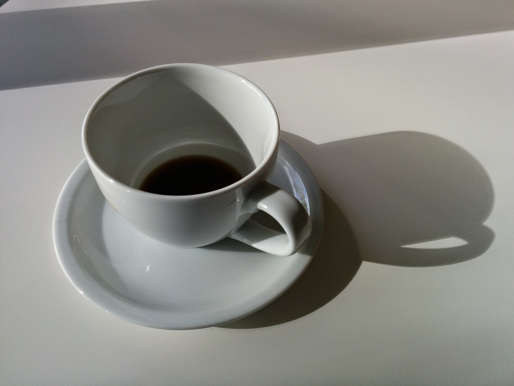

Homepage
Pour Over Coffee

Pour over coffee offer the best way to experience the best bean in the world.
This recipe uses a v60 cone filter and your favorite mug. It will be very important to have a water keetle that will warm water to a very specific temperature. Also, having some way to grind the beans will be a must and the preferred way is to have a burr grinder.
There are a million ways to prepare a pour over coffee and this is just one method. Please use this as a baseline and not as a prescriptive instructions to make your coffee. Start here and then apply your own preferences
Ingredient
- V60 Cone (plastic or ceramic)
- V60 filters (washed or non-washed
- favorite coffee mug (must be sized appropriate for the V60 cone to fit on top)
- favorite coffee bean
- measuring is preferred, but not required
Steps for magic coffee
- warm water to 194 degrees fehrenheit
- while water is warming, measure out 15g of coffee to grind
- on your grinder, you want to set the grind setting to a little coarse above espresso-fine
- prepare the v60 filter by installing in the cone and pouring hot water. then dumpt the hot water from the cup
- pour your grinds in to the coffee filter and make a small divot with your finger in the middle of the grinds to set the grinds but also have a landing spot for the water
- your initial pour will be 22g of water. let set for 30 secs for the grinds to form a bloom
- your next pours will be 30-40g of water each time. Each pour will occur after the water has nearly drained as to not flood the grinds
- once you reach 230g of water, your coffee is complete